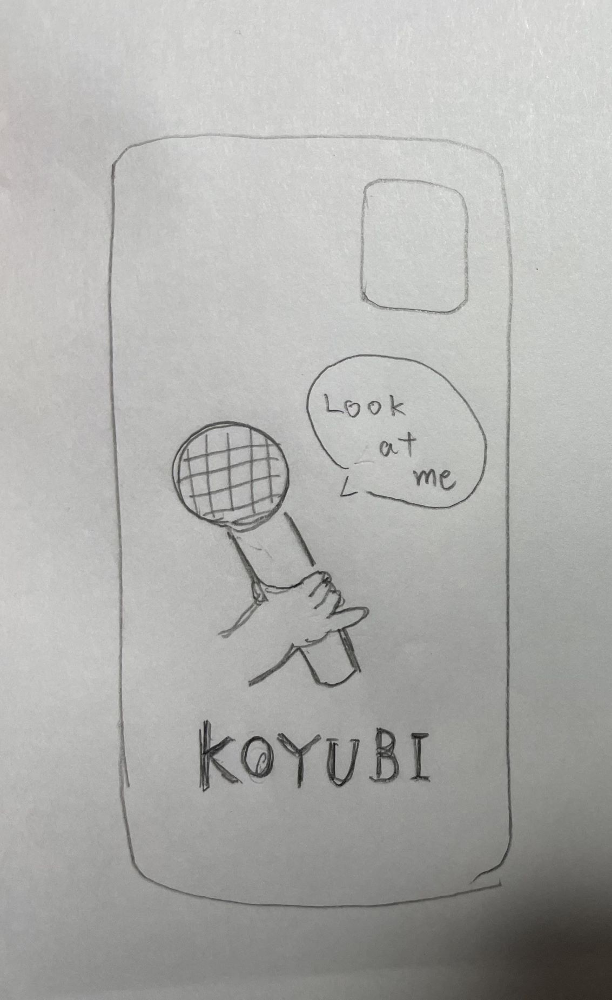
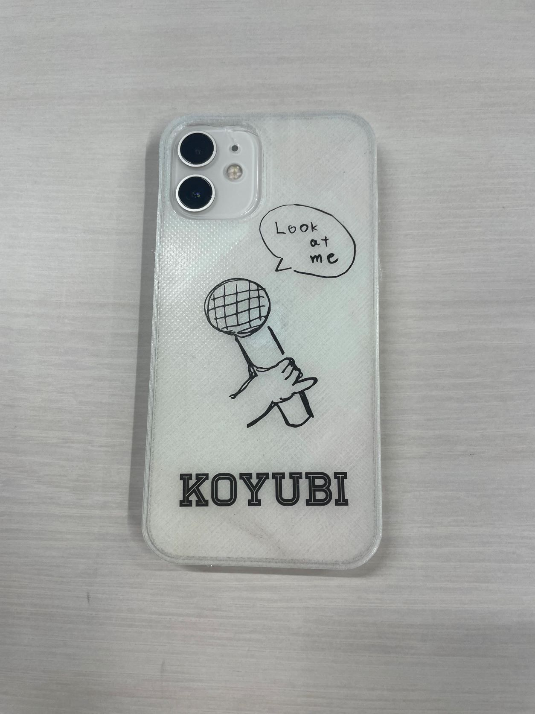
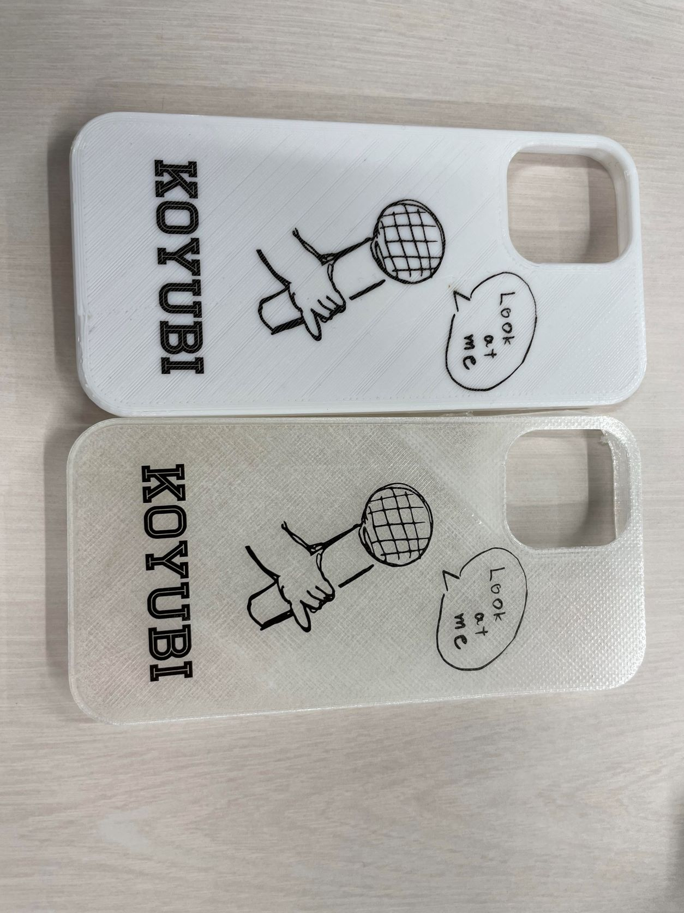

Design for others
注目した人物
プロトタイプ

プロトタイプで描いたものをそのまま使用した。
KOYUBIスマホケース


MakerBot iPhone Case
イラストデータ1
イラストデータ2
説明
数種類のマイクの持ち方を駆使するこの人物は、小指を立てて歌うこともあったという。
あえてその指の形をスマホケースのデザインにすることで注目されたいという欲求を満たすことができると考えた！
この人物の身元が判明したため、その人のサイズのスマホケースも制作中だ...
使用機材
3Dプリンター（PLA・TPU）、UVプリンター
作成方法について
今回、MakerBotというサイトにあったiPhoneケースの3Dプリントデータを使用した。
サイトの使い方については先輩のページを参考にした。
【常定先輩】
また、イラストについてはスケッチしたものを写真に収め、トレースした。
同じ班のメンバー